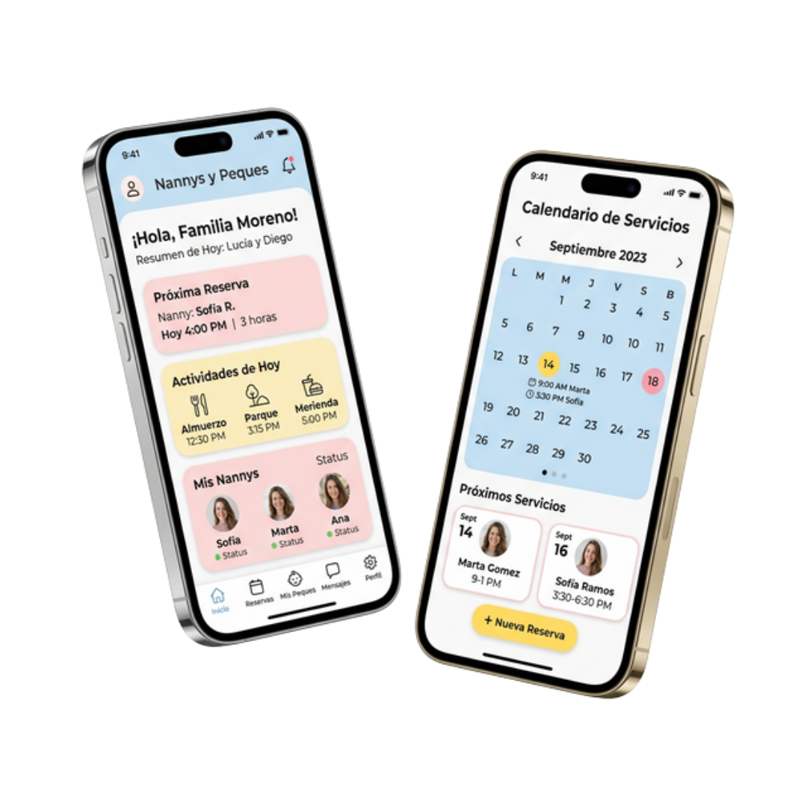

Servicio profesional y seguro de niñeras a domicilio en:
Puebla,
Xalapa, Querétaro y CDMX.

En Nannys y Peques no solo enviamos niñeras a tu casa; ofrecemos un Sistema Profesional de Cuidado y Desarrollo Infantil respaldado por tecnología y especialistas.
Control total de tus servicios, horarios y actividades de tu peque desde tu celular. Tecnología para tu tranquilidad.
Servicios auditados y planeaciones basadas en las 5 áreas del desarrollo para potenciar el crecimiento de tu peque.
Soluciones flexibles y personalizadas para el cuidado de tu pequeño
Estimulación cognitiva, motriz, sensorial y de lenguaje. Seguimiento diario y planeación de actividades semanal. Todo mientras velamos por la seguridad y necesidades básicas de tu peque.
Si necesitas apoyo solo por unas horas o un día en particular. Para trabajar en casa, citas u ocasionalmente tener un respiro personal.
Apoyo en rutinas de sueño y despertares nocturnos. Descansa con total tranquilidad sabiendo que tu peque está en buenas manos.
Celebra y disfruta tu evento mientras nosotros cuidamos de tus invitados más peques con un ambiente súper divertido.
Refuerzo académico en tareas, lectura y matemáticas. Fomentamos hábitos de estudio desde el respeto y empatía.
Atención prioritaria y de emergencia por cambios de último minuto o imprevistos de máxima prioridad. (Sujeto a disponibilidad)
Un proceso estructurado para la máxima seguridad de tu familia
Platícanos sobre tus necesidades, que días y en que horarios requieres a tu nanny, tu ubicación y edad de tu peque. Así como todos los detalles importantes sobre tu peque y su rutina diaria.
Estamos convencidos de que nuestros peques reciban la mejor atención y al mejor precio. Te compartimos una cotización personalizada que superará tus expectativas.
Compartimos la información relevante para que puedas conocer a tu nanny y tener la tranquilidad de saber quien estará cuidando lo que más amas.
Tu nanny llega uniformada, identificada y lista para amar, servir y cuidar lo que más amas.
Solo el 10% de las candidatas superan nuestros filtros de reclutamiento. Buscamos amor, vocación y experiencia en cada Nanny
Pruebas psicométricas, revisión de referencias, filtro de seguridad.
Supervisamos de primera mano el desempeño de nuestras nannys durante el servicio. Teniendo como objetivo cumplir tus expectativas.
Atención telefónica inmediata en caso de cualquier eventualidad durante tu servicio contratado.
Formar parte de nuestra red te brinda acceso a convenios exclusivos para el bienestar de tu familia.
Descuentos exclusivos con pediatras y ginecólogos certificados.
Convenios con clínicas dentales premium para toda la familia.
Asesoría nutricional y planes de bienestar con tarifas preferenciales.
Convenios en centros de entretenimiento y servicios infantiles.
Creciendo junto a las familias mexicanas con seguridad y amor.
años de experiencia
ciudades con cobertura
familias atendidas
peques acompañados
Muy bien todo, son muy amables y atentas, voy a regresar para solicitar el servicio eventual nuevamente.
Aunque el proceso de reclutamiento tomó unos días, la atención de la nanny es amable y eficiente. Sin duda, volvería a Nannys y Peques.
Lugar ideal para buscar apoyo fijo. Las actividades de la Neuronanny le encantaron a mi pequeño.
El apoyo de Miss Nanny para regularizar académicamente a mi hija fue increíble y con muchísimo amor.
Utilicé el servicio nocturno porque tenía una guardia pesada en el hospital y pude descansar 100%.
Excelente servicio de Nanny Fija, al principio tenía dudas pero mi peque la adora. Nos salvó la vida cuando regresé a la oficina.
Increíble plataforma. Programamos la cita y el pago desde el celular y todo fluyó súper rápido. Excelente trato.
Me encanta el seguimiento que le dan al desarrollo. Totalmente confiables y recomendadas para estimular a tu peque.
Ofrecen programas integrales muy atractivos y cuentan con el acompañamiento de Nanny Guía que fue clave al principio.
Te atienden muy bien, mi niño se sintió en muchísima confianza y yo me pude ir tranquilo a mi trabajo.
Contraté nanny para mi fiesta privada y se encargaron de toda la diversión de los niños. Un alivio total.
Excelente el trabajo de la supervisora que llegó de sorpresa. Muestra que están pendientes del servicio al 100%.
Ya llevamos un año con Nannys y Peques. La neuronanny ha ayudado muchísimo al desarrollo de lenguaje de nuestro hijo con el plan de actividades.
Contratamos el servicio para nuestra boda y los niños estuvieron súper entretenidos y seguros. Nuestros invitados disfrutaron el evento sin estrés.
La supervisión constante que hace la agencia nos da mucha paz. Definitivamente ha sido la mejor inversión para nuestra familia.
Esquiva los obstáculos de la ciudad para cumplir con el
servicio de hoy.
Escritorio: Usa Espacio o ↑ para saltar y ↓
para
agacharte.
Móvil: Toca la pantalla para saltar.
Nannys y Peques ofrecemos un valor agregado que otras agencias no tienen:
Invertir en nosotros es asegurarse de que su peque reciba el mejor cuidado posible 💛.
En Nannys y Peques no solo enviamos a alguien a cuidar a tu peque, ofrecemos un programa integral con estimulación, supervisión diaria y respaldo 24/7. Además, nuestras nannys pasan 8 filtros de seguridad y reciben capacitaciones constantes. Lo que inviertes es tranquilidad y un desarrollo óptimo para tu peque 🌟.
Sabemos lo valioso que es confiar el cuidado de tu peque 💕. Por eso nuestras nannys pasan un proceso de selección muy riguroso y solo 10 de cada 100 candidatas son aceptadas. Además, cuentas con supervisión constante, Nanny Guía, Nanny Supervisora y atención a emergencias 24/7. Siempre estarás acompañado por la agencia para garantizar tu tranquilidad.
💛. Durante los primeros días, tu nanny asiste junto con nuestra Nanny Guía para establecer rutinas y facilitar la adaptación. Y si por alguna razón no hubiera conexión, le asignamos otra nanny sin costo extra 👩🍼.
Para ello tenemos nuestro servicio de Nanny Eventual 💕! Puede contar con nosotras solo cuando lo necesite: para un día, unas horas, una noche o un evento. Así tiene la seguridad de que, aún en momentos puntuales, tu peque estará en manos confiables y capacitadas.